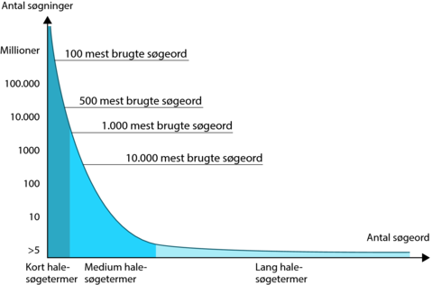
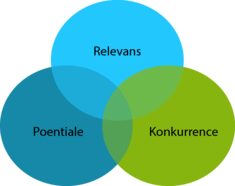

Sørgeordsanalyse:
Resultatet af søgeordsanalysen er en liste med de søgeord, der har relevans for virksomhedens nuværende eller fremtidige hjemmeside.
Værdi af søgeord: https://www.advancedwebranking.com/ctrstudy/
Fremtid: Forstå intention og søgeadfærd af kunder.
Delanalyser:
Analyse af antallet søgninger på de enkelte søgetermer
Analyse af konkurrencen på de enkelte søgetermer
Gennemgang af nuværende placeringer på søgetermerne
Prioritering af de søgeord, man vil optimere
Kategorisering af de søgeord, man vil optimere
Søgetermer:
Opbygning
Kort hale-søgetermer: Løbesko, bukser, t-shirt, cykel
Medium hale-søgetermer: Billige løbesko, blå bukser, jack & jones t-shirt, rejser til USA
Lang hale-søgetermer: Billige løbesko fra Puma størrelse 43, blå slim fit jeans 32, Jack & Jones t-shirt på tilbud, rejser til USA med familien i autocamper.
Hovedtermer
Udskiftningstermer
Haletermer

Kategorier:
Produktsøgninger
Informationssøgninger
Knowledge Graph
Brandsøgninger
Lokale søgninger
I praksis:
- keywordtool.io, ubersuggest.org, Wordtracker, Wordstream, buzzsumo og Danske rebutter.me, relaterede søgning, autocomplete, søgeordsforslag
- Keyword planner, og Bing har et tilsvarende med navnet Bing Keyword Research. Moz Keyword Analysis, Majestic SEO, OpenCalais, SEMrush, Keywordspy
Hvilken konkurrence, der er på et søgeord
Estimat af månedlig trafik på et søgeord
Søgeordsforslag til nye søgeord og lignende, der kan bruges på hjemmesiden.
Kategorisering
Brands – f.eks. Adidas, Nike, Reebok
Typer/farver/modeller – f.eks. løbesko, fitnesssko, træningssko, vægtløftningssko, blå, grøn, fb231, high runner, classic
Alternativer – f.eks. fivefinger, sandaler, cykelsko, sneakers, lædersko
Problemer – f.eks. Hvilke løbesko skal jeg vælge? Hvornår skal løbesko udskiftes? Hvor er de bedste løberuter i Gribskov?
Tillægsord – f.eks. billig, priser, størrelse
Placering i købsflow f.eks. inspirationssøgning, informationssøgning, evaluering
Målgruppe f.eks mænd 20-30 år, 30-40 år osv.
Persona f.eks eliteatleten, hyggemotionisten, søndagsløberen, drengerøven
Afdelinger – f.eks. herretøj, dametøj, herresko, damesko,
Produkter – f.eks. løbesko, fitnesssko, træningssko
Nuværende hjemmesidestruktur – f.eks. hjemmesidens menustruktur eller indholdsinddeling
Prioriter
Potentiale: Potentialet beregnes i form af antal månedlige søgninger.
Konkurrence: Indikation af konkurrence (Kan vurderes via Keyword planner eller testsøgninger, hvor man ser på antallet af konkurrenter over vurderer deres størrelse kontra sin egen).
Relevans: Relevansen imellem søgeordet, intentionen og virksomhedens produktudvalg.
